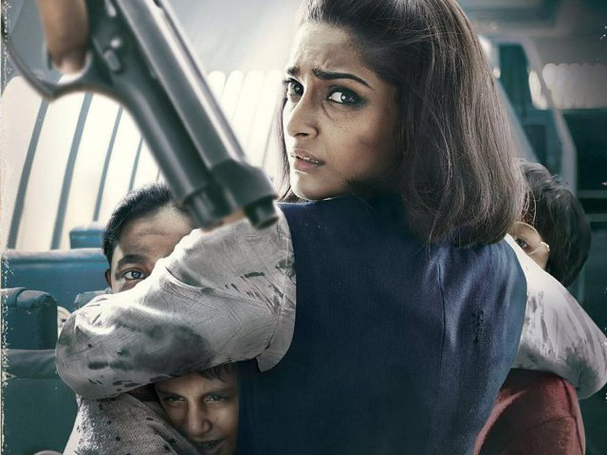

Neerja bhanot
(7 September 1963 – 5 September 1986)
About
This article is about the Indian purser. For the 2016 Hindi-language biographical film based on her life, see Neerja.Neerja Bhanot (7 September 1963 – 5 September 1986)[1][2] was an Indian flight purser. On 5 September 1986, she saved a large number of passengers onboard Pan Am Flight 73, which had been hijacked by four Palestinian terrorists from the Abu Nidal Organization after it made a stopover at Jinnah International Airport in Karachi, Pakistan. Around 17 hours into the standoff, after she opened an emergency exit door and began helping passengers escape from the plane, Neerja was shot and killed by the hijackers. Shortly afterward, Pakistan's Special Service Group stormed the aircraft and captured all of the hijackers. Posthumously, Bhanot became the first female recipient and, until 2003, the youngest recipient of the Ashoka Chakra, the highest peacetime gallantry award of India. She also received the Tamgha-e-Pakistan, the 4th highest civilian award of Pakistan, in addition to several accolades from the United States.[2][3] Her life and humanitarian actions inspired the 2016 Indian Hindi-language biographical film Neerja, directed by Ram Madhvani and starring actress Sonam Kapoor.
Hijacking
Bhanot was the Senior Flight Purser on Pan Am Flight 73, a Boeing 747-121 flying from Bombay to New York via Karachi and Frankfurt, which was hijacked in Karachi by four Palestinian terrorists on 5 September 1986. The aircraft was carrying 380 passengers and 13 crew members. The terrorists wanted to fly to Cyprus with the goal of freeing Pakistani prisoners in Cyprus. Bhanot was able to alert the cockpit crew as soon as the hijackers boarded the plane, and as the plane was on the apron, the three-member cockpit crew of pilot, co-pilot, and the flight engineer fled from the aircraft through an overhead hatch in the cockpit. As the most senior cabin crew member, Bhanot took charge of the situation inside the plane.[11][12][13] The hijackers were part of the Abu Nidal Organization, a Palestinian terrorist organization backed by Libya; they were targeting Americans and American assets. In the early minutes of the hijacking, they identified an Indian-American citizen, dragged him to the exit, shot him dead, and threw his body from the plane. The terrorists then instructed Bhanot to collect the passports of all the passengers so that they could identify the other Americans on board. She and the other attendants under her charge hid the passports of the remaining 43 Americans on board, some under a seat and the rest down a garbage chute so that the hijackers could not differentiate between American and non-American passengers.[11][12][14] After 17 hours, the hijackers opened fire and set off explosives. Bhanot opened one of the airplane doors, and even though she could have been the first one to jump out and flee from the aircraft, she did not do so and instead started helping the other passengers escape. According to a surviving passenger, "She was guiding the passengers to the emergency exit. That is when the terrorists were firing constantly fearing a commando attack. They saw Neerja relentlessly trying to help three unaccompanied children, among others, out and that is when they caught her by her hair and shot her point blank. "[15] A child on board, then aged seven, became a captain for a major airline and has stated that Bhanot has been his inspiration and that he owes every day of his life to her .[16] She was recognized internationally as "the heroine of the hijacking" and became the youngest recipient of the Ashoka Chakra Award, India's most prestigious gallantry award for bravery during peacetime.[11][12][13]In addition to saving the lives of many hostages, Bhanot also helped prevent the plane from getting off the ground. She posthumously received multiple awards for her courage from the Government of United States, and the Tamgha-e-Pakistan from Pakistan, an award given for showing great human kindness.[12][17]
Awards and Honours
For her bravery, the Government of India posthumously awarded Bhanot the Ashoka Chakra Award, India's highest gallantry award for bravery in the face of the enemy during peacetime. She was the youngest recipient at the time and the first female recipient of this award. [1][18][19] In 2004 the Indian Postal Service released a stamp commemorating her.[20][21] After her death, her family set up the Neerja Bhanot Trust from the insurance proceeds. The trust presents two awards every year, one for a flight crew member, worldwide, who acts beyond the call of duty and another, the Neerja Bhanot Award, to an Indian woman who when faced with social injustice, bravely faced the situation and helped other women in similar social distress. The award includes a sum of INR 150,000 (approximately US$2,000) a trophy and a citation.[11][22][23] Bhanot's brother Aneesh went to Washington, D.C., in 2005 to receive the "Justice for Crimes Award" awarded posthumously to her as part of the Annual Crime Rights Week at a ceremony held at the United States Attorney's office for the District of Columbia.[24] In 2006, she and the other Pan Am Flight 73 flight attendants and Pan Am's flight director for Pakistan were awarded the Special Courage award by the United States Department of Justice.[17] Bhanot House of Austrey School was named in her honour.[25][26] On 2 July 2016, the Bharat Gaurav Award was conferred on her at a ceremony held at the House of Commons, UK Parliament in London, England.[27] On 30 May 2018, Punjab University inaugurated the Neerja Bhanot Hostel (dormitory) on the university campus in Chandigarh. The hostel provides living accommodations for over 350 female students.[28] • Bharat Gaurav Award presented at the House of Commons, UK Parliament on 2 JulyIn popular culture • [edit] • The Neerja I Knew – a coffee table book conceptualised by her brother aeesh Bhanot and published as a tribute to Bhanot, consisting of several chapters written by people who knew her.[29][30] • Neerja – a 2016 Indian Hindi-language biographical thriller drama film written by Saiwyn Quadras and directed by Ram Madhvani starring Sonam Kapoor in the title role of "Head Purser" Neerja Bhanot. Kapoor received a special mention National Award for her acting in the film in 2017.[31] • The Smile of Courage – a book written by her brother Aneesh Bhanot.[32] • [edit] Ashoka Chakra, 1987, India[33] • Tamgha-e-Insaaniyat, 1987, (for showing incredible human kindness), Pakistan[34] • Flight Safety Foundation Heroism Award 1987, United States[35] • Justice for Crimes Award 2005, United States Attorney's Office for the District of Columbia, United States[24] Special Courage Award 2006, United States Department of Justice, United States[17] • Civil Aviation Ministry Award 2011, India[36][37] 2016[38]